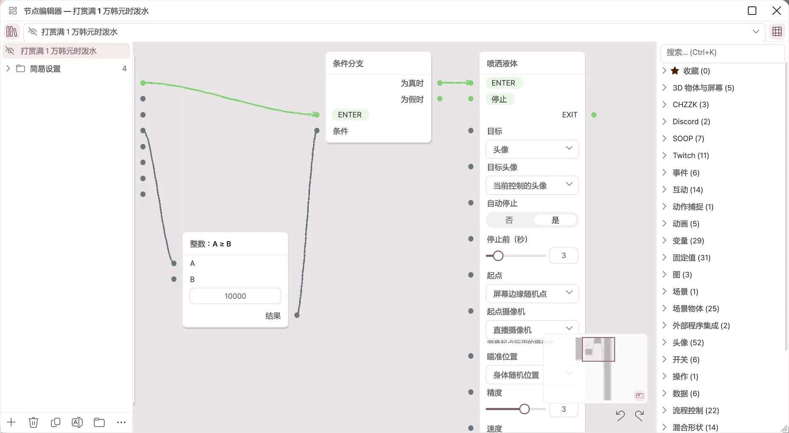
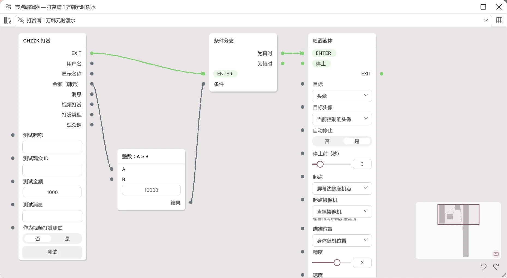

节点编辑器
2.2.0 新增功能，2.1.2 及更早版本中没有。
用连线连接节点，直接搭建“某个事件到来时，在某个条件下，做什么”。在简易设置不够用时使用。编辑和运行需要 Pro，Basic 中仅可查看、平移和缩放。它是直播联动功能，目前为测试版 (Beta)。
与简易设置有什么不同？
| 简易设置 | 节点编辑器 | |
|---|---|---|
| 制作方法 | 在列表中选择触发和动作。 | 拖放节点并用连线连接。 |
| 能做的事 | 投掷·液体·贴纸·灯光·头像动作等固定反应 | 运算·变量·分支·循环，相机·灯光·表情·BlendShape·骨骼·键盘·鼠标·WebSocket 等约 400 种基本节点 |
| 适合的情况 | 一个事件对应一个反应 | 需要组合多个条件，或按顺序串联多个反应时 |
简易设置的条目在内部也以图运行。展开条目并点击在节点编辑器中打开…，即可查看该条目生成的图。
打开编辑器
- 打开直播 → 互动。
- 点击节点编辑器卡片的打开节点编辑器…。
- 编辑器窗口会在应用内打开。拖动标题可移动，拖动边缘可调整大小。用右上角的按钮放大查看或关闭。
关闭后图仍然保留并继续运行。

| 位置 | 作用 |
|---|---|
| 左上角书本图标 | 显示或隐藏图列表。 |
| 选择图 | 选择要编辑的图。用眼睛图标开启或关闭图。 |
| 右上角网格图标 | 显示或隐藏节点列表。 |
| 图列表下方的按钮 | 添加·删除·复制·重命名图、新建分组，以及 ⋯ 菜单（自动排列、导入·导出）。 |
| 节点列表 | 按分类排列的节点。用 Ctrl+K 搜索，用星标收藏。 |
| 小地图 | 在右下角查看整个图，点击即可跳到该位置。 |
| 撤销·重做 | Ctrl+Z、Ctrl+Y |
新图创建时处于关闭状态。完成后需用眼睛图标开启才会运行。
节点与连线
- 从节点列表把节点拖到画布上即可添加。
- 把节点右侧的点（输出）拖到另一个节点左侧的点（输入）即可连接。
- 流程连线（绿线）表示运行顺序，从 EXIT 连到 ENTER。
- 数值连线（灰线）传递金额·名称等数值。
- 流程和数值不能互相连接。放到无法连接的位置时会显示原因。
- 右键点击节点，会出现删除·复制副本·断开所有连线菜单。
- 没有连线的输入，可以直接在节点内的输入框中填写数值。
示例：1 万韩元以上的打赏时泼水

- 用图列表的 + 新建一个图。
- 从节点列表的 CHZZK 分类中拖出 CHZZK 打赏。收到打赏时，流程从 EXIT 输出，并输出金额（韩元）。
- 从运算与文本分类中放置 整数：A ≥ B，把打赏节点的金额（韩元）连到 A。在 B 中填入 10000。
- 从流程控制分类中放置条件分支。把打赏节点的 EXIT 连到 ENTER，把比较节点的结果连到条件。
- 从互动分类中放置喷洒液体，把条件分支的为真时连到 ENTER。
- 用眼睛图标开启图。
- 在打赏节点的测试金额中填入 15000，点击测试，看看是否泼水。改为 5000 再测试，应该不会泼水。
所有事件节点都有测试栏和测试按钮，无需直播即可测试。图关闭时，测试也不会运行。
在节点编辑器中修改简易设置条目后
- 该条目会显示为“已在节点编辑器中修改”，不再重新生成图。之后由图决定动作。
- 点击条目菜单中的恢复为简易设置，会按条目设置重新生成图。在节点编辑器中修改的内容会丢失。
- 自动生成的图中节点重叠时，请点击 ⋯ 菜单中的自动排列。
分享图
用 ⋯ 菜单的导出到剪贴板把图复制为文本，用从剪贴板导入·从文件导入…载入。导入的图处于关闭状态。别人给的图，请在确认内容后再开启。